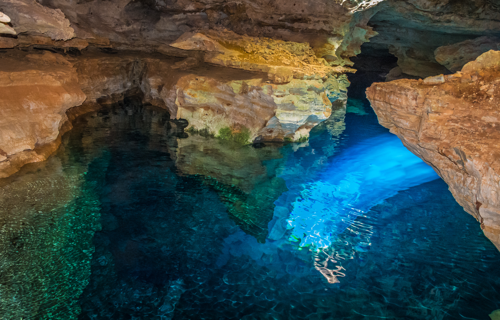
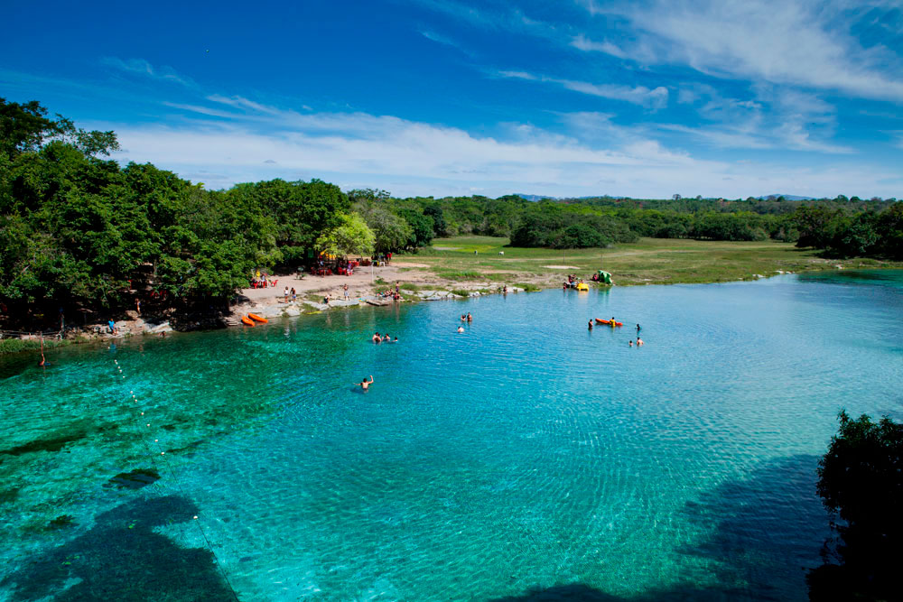
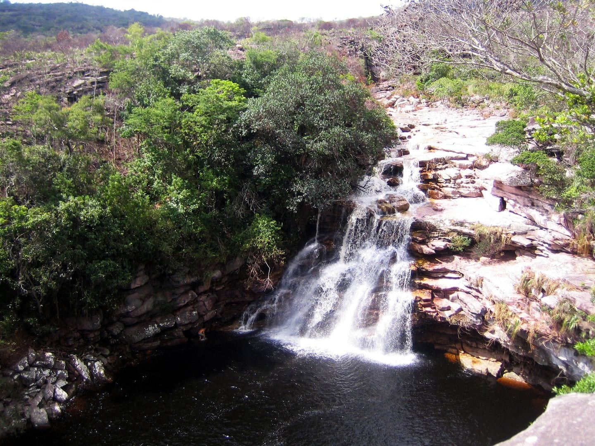
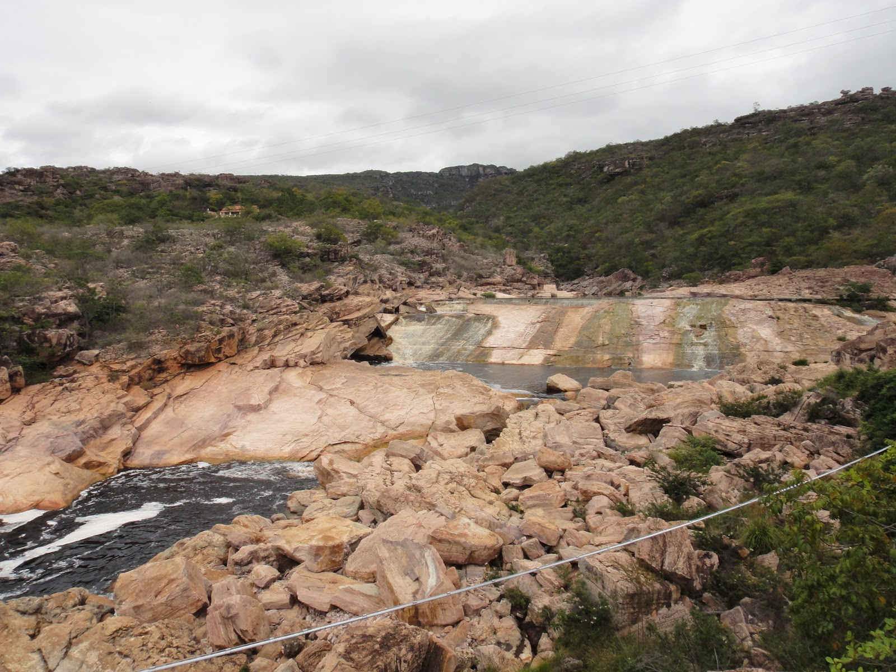

Disciplina TT905 - Atividade 3
Cidades:
Cidade 1
1. Nova Redenção - BA
| Número de Habitantes: |
8034 hab. |
| Área total: |
510,918 km² |
Tabela 1 - Dados numéricos:
-----------------------------
Pontos Turísticos:
- Poço Azul;
- Praia da Peruca;
- Morro da Arara;
- Olho D'água.
-----------------------------
Vídeo:
Cidade 2
2. Iraquara - BA
| Número de Habitantes: |
25478 hab. |
| Área total: |
800,332 km² |
Tabela 2 - Dados numéricos:
-----------------------------
Pontos Turísticos:
- Fazenda Pratinha;
- Gruta Lapa Doce;
- Gruta Bolo de Noiva;
- Gruta Azul.
-----------------------------
Vídeo:
Cidade 3
3. Lençóis - BA
| Número de Habitantes: |
11315 hab. |
| Área total: |
1240,362 km² |
Tabela 3 - Dados numéricos:
-----------------------------
Pontos Turísticos:
- Morro do Pai Inácio;
- Ribeirão do Meio;
- Ribeirão do Alto;
- Caldeirões.
-----------------------------
Vídeo:
Cidade 4
4. Andaraí - BA
| Número de Habitantes: |
13153 hab. |
| Área total: |
1895,162 km² |
Tabela 4 - Dados numéricos:
-----------------------------
Pontos Turísticos:
- Cachoeira do Buracão;
- Pantanal Marimbus;
- Cachoeira do Ramalho;
- Cachoeira do Donana.
-----------------------------
Vídeo:
Cidade 5
5. Joanópolis - SP
| Número de Habitantes: |
13338 hab. |
| Área total: |
374,293 km² |
Tabela 5 - Dados numéricos:
-----------------------------
Pontos Turísticos:
- Cachoeira dos Pretos;
- Cachoeira da Iponina;
- Gigante Adormecido;
- Rampas de vôo livre.
-----------------------------
Vídeo:
Nova Redenção - BA

Iraquara - BA

Lençóis - BA

Andaraí - BA

Joanópólis - SP